exo-v2v¶
Experimental. exo-v2v 0.6.0 is an early release, validated in one lab (ESXi 7.0 U3 to Exoscale ch-gva-2). Try it on non-critical VMs first; commands and behaviour may change.
exo-v2v moves a running VMware vSphere virtual machine to an Exoscale Compute instance. The VM keeps running while its disks are copied; it is stopped only for the final cutover, which took 2 to 9 minutes in our tests, whatever the size of the disks.

- Replicate while the VM runs. The VM's disks are copied straight to the disks of the target instance, then kept in sync with VMware Changed Block Tracking: each cycle copies only what changed.
- Cut over. The VM is shut down, the last changes are copied, the guest is converted for KVM on the target instance itself, and the instance boots the migrated system from its own disks.
No VDDK, no vSphere plugin, no agent inside the guest, no staging storage.
What it handles¶
| Area | Supported |
|---|---|
| Guests | Linux (Ubuntu, Debian, RHEL family) and Windows Server 2022/2025, BIOS or UEFI, Secure Boot, vTPM (details) |
| Disks | Several VMDKs per VM on SCSI, SATA or NVMe controllers; the system disk is found from the boot order or VMware Tools; up to 5 data disks as Block Storage volumes |
| VMDK chains | VMs running on snapshot deltas, at any depth. Snapshots may be taken, deleted or reverted during replication: a revert makes the next cycle copy the allocated areas again |
| Disks that change | A disk grown during replication is followed (its volume is resized; a grown system disk resets the target instance); a disk added is replicated to a new volume |
| LVM | Volume groups spread over several disks. A disk that extends the system disk's volume group is carried inside the root disk; logical volumes on data disks are rebuilt for 4 KiB sectors when their filesystem needs it, with the same UUIDs |
| Filesystems | ext, XFS (including 512-byte-sector XFS, the RHEL default on VMware), NTFS, swap; partition tables GPT and MBR |
| Replication | Changed Block Tracking, VDDK-free, through a replication appliance in vSphere; several migrations at once from one appliance |
| Applications | A group of VMs (load balancer, application servers, databases) replicated together and cut over in one window: stopped front to back, converted in parallel, started back to front with health checks, rolled back as a whole |
| Networks | Each vSphere port group maps to the public interface or an Exoscale private network; VMs keep their private addresses, the guest's network configuration follows the new NICs |
| Rehearsal | Copies of the VMs started from their replicas, converted as at cutover, airgapped (no public IP, isolated networks, no router) and reachable only by SSH through a relay; health checks, a predicted cutover window, the outside names the copies tried to resolve; optionally every member at one point in time (quiesced); the sources and replication carry on |
| Public side | Elastic IPs reserved before the window and configured in the guest (Linux and Windows), reverse DNS, DNS records on Exoscale DNS switched once the application is healthy and put back by a rollback, renumbered private addresses, security group rules between groups |
| WAN | One bandwidth limit for the whole appliance with a weekly schedule, zlib compression of the copy stream |
| Status page | A web page on the appliance with every migration and group; optional actions (sync, rehearse) with a token, never a cutover; a read-only MCP server for AI assistants |
| vCenter | VMs by name, inventory path or UUID; groups from a folder or a tag; plan checks the account's privileges, the appliance's datastores and DRS |
| Unattended | Replication on systemd timers, webhook alerts (failing or lagging replication, a target that restarted, cutovers); a target that restarts boots nothing and is recovered with one command |
| Not supported | Independent disks, raw device mappings, encrypted disks, Windows dynamic disks and Storage Spaces as data disks (limitations) |
Where to start¶
| Page | What it covers |
|---|---|
| How it works | The replication appliance, sync cycles, cutover, guest adaptation, security model |
| Prerequisites | vSphere privileges, the appliance, network flows, Exoscale account |
| vCenter | The role, folders and tags, where the appliance runs, DRS |
| IAM role | A least-privilege Exoscale role for the appliance's API key |
| Receiver templates | Templates that boot straight into the receiver, and the Packer recipe that builds them |
| Moving an application | Groups: the manifest, private networks, the coordinated cutover, rollback |
| Rehearsal | Airgapped copies of the VMs to check before the cutover |
| Web status page | The status page and its API |
| Public IPs and DNS | Elastic IPs, reverse DNS, DNS records, renumbering, security group rules |
| Actions, API and MCP | Starting syncs and rehearsals from the page or its API; the read-only MCP server |
| Operations runbook | Step-by-step migration, rollback, troubleshooting |
| Supported operating systems | Tested and expected-to-work guests, measured downtime |
| Limitations | Known limits and their workarounds |
| Architecture | Design details for contributors |
| Project status | What is tested, and what it takes to drop the "Experimental" label |
Install¶
On the replication appliance (a Linux VM in the same vSphere environment, with
Python 3.10 or later and the exo CLI):
pipx install https://github.com/retrack/exo-v2v/releases/download/v0.6.0/exo_v2v-0.6.0-py3-none-any.whl
exo config # Exoscale credentials for the exo CLI
export VSPHERE_HOST=vcenter.example VSPHERE_USER=migration@vsphere.local VSPHERE_PASSWORD=…
Migrate a VM¶
exo-v2v plan web01 --vm web01 --zone ch-gva-2 --security-group web
exo-v2v create web01 # target instance and volumes
sudo -E exo-v2v sync web01 # first cycle: full copy, the VM keeps running
sudo -E exo-v2v sync web01 --every 900 # keep it fresh until the maintenance window
sudo -E exo-v2v cutover web01 # downtime starts here
exo-v2v cleanup web01 # after you validated the workload
plan prints everything it will do and refuses unsupported VMs; nothing is
created before create. Every step can be repeated or resumed, and
exo-v2v rollback powers the source VM back on until cleanup.
Move an application¶
exo-v2v group discover shop --vm lb01 --vm app01 --vm app02 --vm db01 --zone ch-gva-2
exo-v2v group plan shop -f shop.yaml # after setting tiers, health checks, security groups
exo-v2v group create shop # private networks, anti-affinity, receivers
sudo -E exo-v2v group sync shop --every 900
sudo -E exo-v2v group cutover shop # one window for the whole application
Before the window, sudo -E exo-v2v group rehearse shop starts airgapped copies to check
(Rehearsal). See Moving an application. sudo -E exo-v2v web shows every
migration and group on a status page.
exo-v2v is licensed under the Apache License 2.0 and comes without warranty. Source: github.com/retrack/exo-v2v. VMware and the VMware product names are trademarks of Broadcom Inc. and/or its subsidiaries; exo-v2v is not affiliated with Broadcom (see Trademarks and licences).